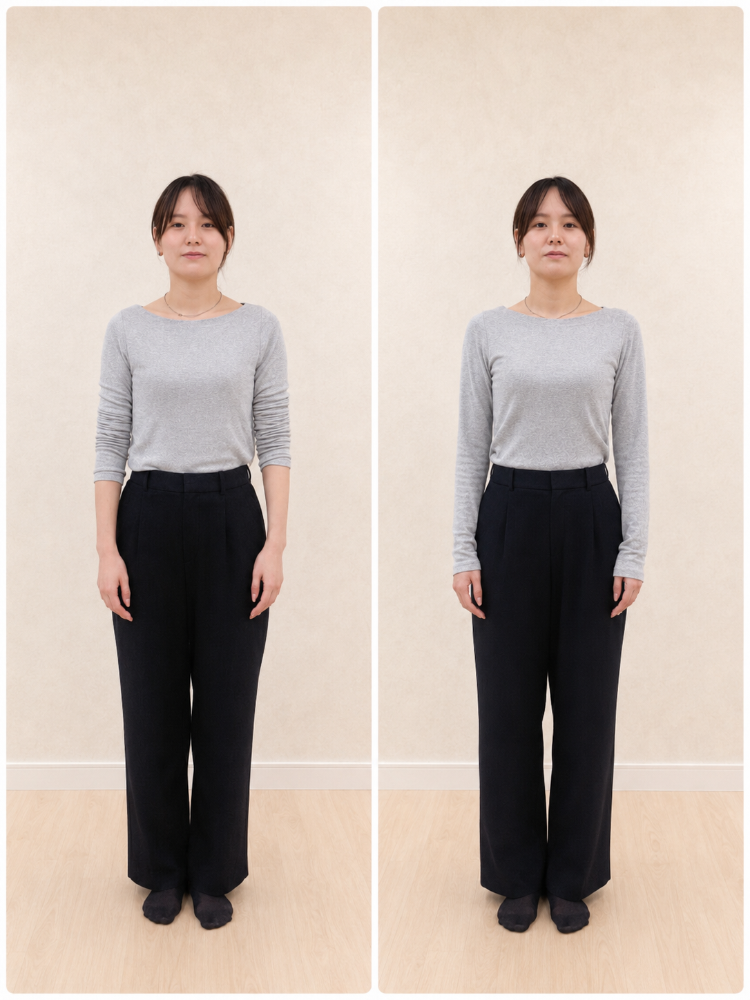
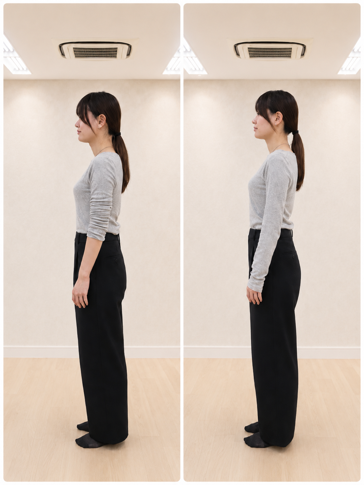

01
姿勢・立ち姿の意識を整える
肩、首、背中、腰、股関節などの動かしやすさに意識を向け、日常の姿勢や見た目の印象づくりをサポートします。
毎日の姿勢、呼吸、立ち姿。小さな違和感に気づくことが、自分を整える第一歩です。

タスキストレッチは、身体を強く変えることを目的にしたトレーニングではありません。 たすきで肩・背中・肋骨まわりの位置を感じながら、経絡の考え方に沿って、呼吸・姿勢・身体感覚に意識を向ける美容コンディショニングです。
肩、首、背中、腰、股関節などの動かしやすさに意識を向け、日常の姿勢や見た目の印象づくりをサポートします。
東洋医学の経絡・五行の考え方をわかりやすく取り入れ、今の身体の状態やコンディションに気づくきっかけをつくります。
身体が整う感覚、呼吸のしやすさ、立ち姿への気づきを通じて、人と会う日や大切な予定の前にも自分らしく過ごせる状態を目指します。
たすきストレッチでは、姿勢・肩の位置・横から見た立ち姿などをレッスン前後で確認します。
「変化を保証する」ものではなく、自分の身体の状態に気づくためのチェックとして活用します。

肩の高さ、首まわり、腕の位置、立ち姿の印象などを確認します。

頭・肩・背中・骨盤まわりの見え方や、身体の軸の感覚を確認します。
普段どれだけ前のめりで過ごしていたかに気づきました。強い運動ではないのに、終わった後は呼吸がしやすく感じました。
ただ伸ばすだけではなく、今の身体の状態を確認しながら進めるので、自分に必要なケアがわかりやすかったです。
写真を撮る予定の前に受けました。姿勢や表情の硬さに気づけて、気持ちまで少し前向きになれました。
はい。無理に伸ばすのではなく、気持ちよく動かせる範囲で行います。痛みがある場合はすぐに中止・調整します。
ご利用いただけます。開催回・会場により対象が異なる場合があるため、予約時にご確認ください。
動きやすい服装、飲み物、必要に応じてタオルをご持参ください。専用タスキはレッスン時にご用意します。
本サービスは医療行為・治療・整体・痩身効果を保証するものではありません。姿勢意識、身体感覚、美容意識、印象づくりをサポートするストレッチプログラムです。
発熱、体調不良、強い痛みやしびれ、医師から運動制限を受けている場合、妊娠中または妊娠の可能性がある場合などは、事前にご相談ください。